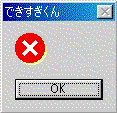

シェアウェア購入・送金方法について
・期間限定 新サービス
超級ランキング卓3000試合分以上、または上級ランキング卓5000試合分以上、またはランキング卓7000試合分以上の牌譜提供者には、鍵を１本無料で送信させていただきます。mjscoreやＨＮは複数でも可能ですが（２人分以上のデータでもかまいません）、mjscoreに改変が加えられている場合や、「イカサマ」等のデータの場合には、このサービスが受けられません。また既にとつげき東北が所有しているデータは試合数には含みません。対象は、第一東風荘および第二東風荘です。
提供された牌譜はとつげき東北が自由に閲覧し公開し、または販売等のために利用することができます（別に売る気はありませんが 笑）。
これについての質問等はメールtotutohoku@hotmail.comでお願いします。
・v3.61公開
 この表示が出て止まるバグが修正されました
・役のチェックルーチン完成
待ち牌・自分の手が上がった場合の得点計算のルーチンが、あゆ☆代表の協力を得て完成しました。
マンガンテンパイのうち何％が上がれているか、といった単純なデータだけでなく、「相手のリーチに、何点以上のテンパイからつっぱるべきか」、「リーチ宣言牌に対して、危険牌は何か」などの戦術向けデータの算出にもつながるでしょう。
・集計の高速化に向けて
できすぎくんは集計する情報量に対して効率的にデータを検索するため、mjscoreのサイズに対して充分に少ない最近の試合だけを集計する場合に、そのパフォーマンスは他の集計ツールと比較にならない速度を持っています。
しかし大きなデータになると、できすぎくんの出す細かいデータのために、集計は必ずしも他のツールより圧倒的に早いわけではありません。
そこで、「mjscoreのいかなるデータに対しても、これまでの５倍以上程度の集計速度で集計できる」ことを目標とした、全く新しい集計システムを考案中です。これまで５秒かかっていた集計が１秒で終わるということです（５秒の集計とは、牌譜を出力している場合の超ラン1500試合データを、Pentium2-450MHzで集計する程度に相当します）。
・集計の高速化のためのアイデア
アイデアとしては、できすぎくんの出力にとって必要なデータだけを、mjscoreからあらかじめ切り出して保存しておき、保存されている部分のデータについてはいちいちmjscoreから複雑な文字列操作を介することなく読み出すという方法です。保存データはいつでも追加書き込みすることができ、また一度保存されたデータの部分は（できすぎくんのバージョンアップによって出力データが変更にならない限り）更新する必要がありません。
簡単に言うと、通常の集計では
[1西]2m4m5m8m9m7p9p2s4s8s白発中
[2北]2m3m9m3p4p5p8p2s2s3s5s9s発
[3東]1m3m7m5p5p8p9p6s南南北北中
[4南]3m5m8m1p2p3p7p8p9s西西北発
[表ドラ]4s [裏ドラ]8s
* 3G白 3d中 4G2m 4d北 1G東 1d中 2G中 2D中 3G1s 3d白 4G1p 4d9s 1G1s 1d白
* 2G6m 2d9m 3G6p 3d1s 4G西 4d発 1G6m 1d発 2G東 2d発 3G1m 3d9p 4G南 4D南
* 1G北 1D北 2G2s 2d東 3G1s 3D1s 4G中 4D中 1G1m 1d東 2G発 2D発 3G2p 3D2p
* 4G南 4D南 1G1p 1D1p 2G白 2D白 3G6s 3d6p 4G9s 4D9s 1G7m 1d8s 2G5s 2d9s
* 3G7s 3D7s 4G4m 4d8m 1G3p 1D3p 2G9p 2d3s 3G7m 3d8p 4G2p 4D2p 1G9p 1d1s
* 2G西 2D西 3G4s 3d3m 4G6m 4d1p 1G白 1d7p 2G5s 2d6m 3G3m 3D3m 4G6p 4R 4d西
* 1G4p 1d白 2G8m 2D8m 3G1m 3D1m 4A
このような文字列から様々な情報を解析する必要があったものを、
「親は番号３の人」
「先制リーチしたのは番号４の人で、それは〜〜順目」
「リーチの待ちはリャンメンで、追っかけリーチはなし」
「放銃したのは番号３の人で、それは〜〜順目」
「上がったのは番号４の人で、それは〜〜順目」
「上がり点数は〜〜点」
「テンパイしていたのは番号〜〜の人と、番号〜〜の人・・・」
・・・・・
というように必要なデータだけ取りだしてしまって、それを別ファイルに保存しておき、集計に代用するということです。
集計ルーチンの実行時間にとって致命的（critical）な処理は、テンパイチェック＞＞mjscoreの文字列からのデータの読み込み＞＞データの集計です。
やってみないとわかりませんが、実行速度が５倍程度にはなるかな、と期待しています。
・集計の高速化の進展
集計にかかるCPU時間を計測し、現在の「mjscoreから情報を取り出す」部分を省いた場合に、どの程度早くなるかを見積もりました。通常の集計において２倍、詳細集計において10倍程度の高速化が見込めます。
現在の通常集計のCPU時間4000（1250試合）に対して、高速化後の詳細集計CPU時間はおおむね1500〜2000となることが予想されます。
これなら詳細集計にしても集計の待ち時間は気にならない程度になるでしょう。